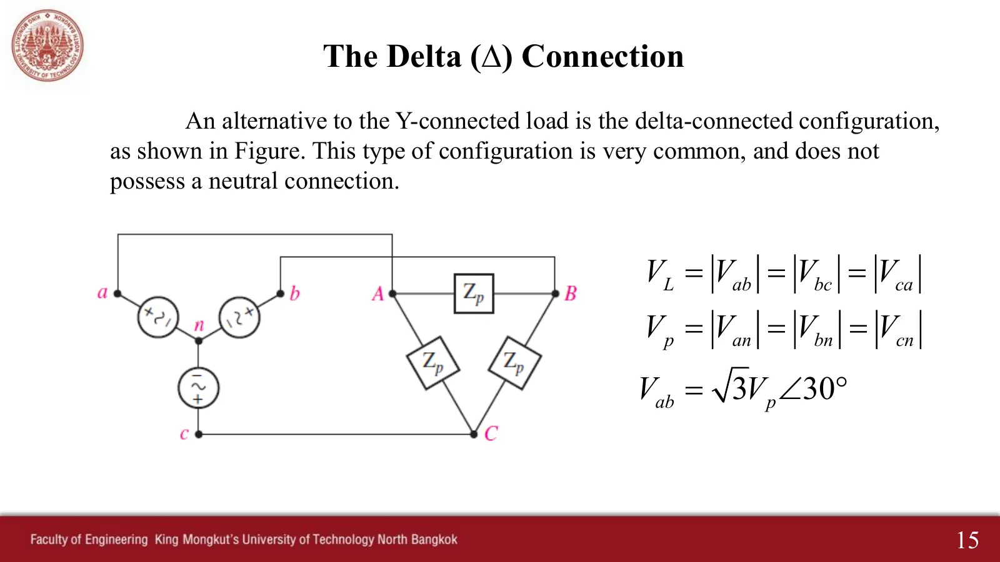
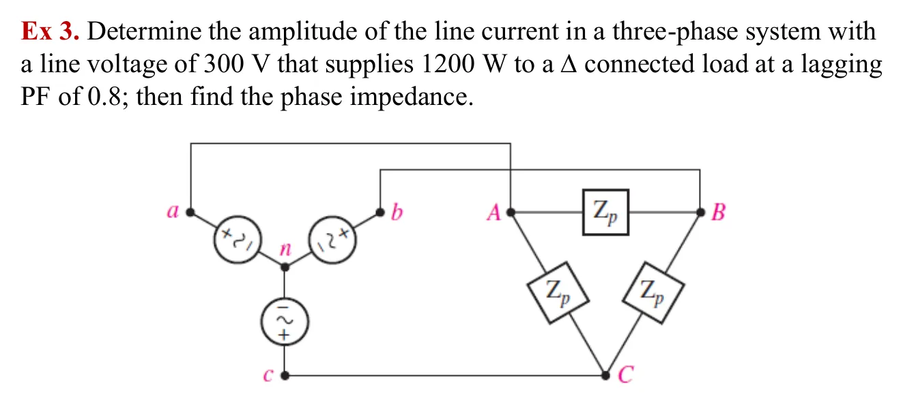

โหลดต่อแบบเดลตา (Δ) The delta (Δ) load — line voltage across each phase, line current √3 times the phase current
The delta (Δ) load Line voltage across each phase, line current √3 times the phase current
ในโหลดเดลตา อิมพีแดนซ์แต่ละตัวต่อคร่อมสายสองเส้นและไม่มีจุดนิวทรัล (สไลด์หน้า 15) แรงดันของแต่ละเฟสจึงเป็นแรงดันสาย \(V_L\) กระแสในอิมพีแดนซ์คือกระแสเฟส \(\mathbf{I}_{AB} = \mathbf{V}_{AB}/Z_p\) (หน้า 16) แต่กระแสในสายไม่ใช่กระแสเฟส: ที่มุม A มีกระแสเฟสสองตัวมาพบกัน กฎกระแสของเคียร์ชอฟฟ์ (Kirchhoff's current law, KCL) จึงให้ \(\mathbf{I}_{aA} = \mathbf{I}_{AB} - \mathbf{I}_{CA}\) ผลต่างของเฟเซอร์สองตัวที่ห่างกัน 120° ยาวกว่าแต่ละตัว \(\sqrt3\) เท่า (หน้า 17) ตรงกันข้ามกับโหลดวายที่กระแสเท่ากันแต่แรงดันสายโตกว่า \(\sqrt3\) เท่า หน้านี้มีภาพจำลองกระแสเฟสและกระแสสายของโหลดเดลตา (ส่วน A) โจทย์ Ex 3 สไลด์หน้า 18 (ข้อ 1) และโหลดเดลตาเทียบกับโหลดวายที่เทียบเท่า (ส่วน B)
In a delta load each impedance is connected across two lines and there is no neutral point (slide p. 15), so each phase sees the line voltage \(V_L\). The current in an impedance is the phase current \(\mathbf{I}_{AB} = \mathbf{V}_{AB}/Z_p\) (p. 16), but the current in a line is not a phase current: two phase currents meet at corner A, so Kirchhoff's current law (KCL) gives \(\mathbf{I}_{aA} = \mathbf{I}_{AB} - \mathbf{I}_{CA}\). The difference of two phasors 120° apart is \(\sqrt3\) times longer than either (p. 17), the reverse of a Y load, where the currents are equal and the line voltage is \(\sqrt3\) times larger. This page has a simulation of the phase and line currents of a delta load (section A), Ex 3 of slide p. 18 (problem 1), and a delta load beside its equivalent Y (section B).
ประเด็นสำคัญของหน้านี้
- โหลดเดลตา: แรงดันเฟสของโหลด = แรงดันสาย \(V_L\) และไม่มีสายนิวทรัล
- กระแสเฟส \(\mathbf{I}_{AB} = \mathbf{V}_{AB}/Z_p\) และกระแสสายจาก KCL ที่มุม: \(\mathbf{I}_{aA} = \mathbf{I}_{AB} - \mathbf{I}_{CA}\), \(\mathbf{I}_{bB} = \mathbf{I}_{BC} - \mathbf{I}_{AB}\), \(\mathbf{I}_{cC} = \mathbf{I}_{CA} - \mathbf{I}_{BC}\)
- ระบบสมดุล: \(I_L = \sqrt3\,I_p\) และในลำดับบวก \(\mathbf{I}_{aA}\) ตามหลัง \(\mathbf{I}_{AB}\) อยู่ 30° (\(\mathbf{I}_{aA} = \sqrt3\angle{-30^\circ}\,\mathbf{I}_{AB}\))
- กำลังรวม \(P = 3V_LI_p\cos\theta = \sqrt3V_LI_L\cos\theta\) สูตรเดียวกับโหลดวาย (\(\theta\) คือมุมของ \(Z_p\))
- โหลดเดลตาสมดุลเทียบเท่าโหลดวายที่ \(Z_Y = Z_\Delta/3\) (Hayt) แปลงแล้วใช้วิธีทีละเฟสของหน้า 9.2 ได้เลย
Key points of this page
- Delta load: the load phase voltage equals the line voltage \(V_L\), and there is no neutral.
- Phase current \(\mathbf{I}_{AB} = \mathbf{V}_{AB}/Z_p\); line currents by KCL at the corners: \(\mathbf{I}_{aA} = \mathbf{I}_{AB} - \mathbf{I}_{CA}\), \(\mathbf{I}_{bB} = \mathbf{I}_{BC} - \mathbf{I}_{AB}\), \(\mathbf{I}_{cC} = \mathbf{I}_{CA} - \mathbf{I}_{BC}\).
- Balanced: \(I_L = \sqrt3\,I_p\), and in positive sequence \(\mathbf{I}_{aA}\) lags \(\mathbf{I}_{AB}\) by 30° (\(\mathbf{I}_{aA} = \sqrt3\angle{-30^\circ}\,\mathbf{I}_{AB}\)).
- Total power \(P = 3V_LI_p\cos\theta = \sqrt3V_LI_L\cos\theta\), the same formula as for a Y load (\(\theta\) is the angle of \(Z_p\)).
- A balanced delta is equivalent to a Y with \(Z_Y = Z_\Delta/3\) (Hayt); after converting, the per-phase method of page 9.2 applies directly.

กระแสเฟสและกระแสสายของโหลดเดลตา
Phase and line currents of a delta load
วงจรของ Hayt รูป 12.18: แหล่งจ่ายวายกับโหลดเดลตา ค่าตั้งต้นคือโหลดของข้อ 1 (\(180\angle 36.87^\circ\ \Omega\) ที่แรงดันสาย 300 V) จุดในสายวิ่งเร็วกว่าจุดในอิมพีแดนซ์ เพราะกระแสสายโตกว่า \(\sqrt3\) เท่า ระนาบสร้าง \(\mathbf{I}_{aA} = \mathbf{I}_{AB} + (-\mathbf{I}_{CA})\) แบบหัวต่อหาง (เส้นประคือ \(-\mathbf{I}_{CA}\)) และแสดงมุม 30° ระหว่าง \(\mathbf{I}_{AB}\) กับ \(\mathbf{I}_{aA}\) ลองเปลี่ยนมุมของ \(Z_p\): ทุกกระแสหมุนไปพร้อมกัน แต่อัตราส่วน \(I_L/I_p\) และมุม 30° ไม่เปลี่ยน
The circuit of Hayt Fig. 12.18: a Y source and a delta load. The default is the load of problem 1 (\(180\angle 36.87^\circ\ \Omega\) at a 300 V line voltage). The dots in the lines run faster than those in the impedances, because the line current is \(\sqrt3\) times larger. The plane builds \(\mathbf{I}_{aA} = \mathbf{I}_{AB} + (-\mathbf{I}_{CA})\) head to tail (dashed: \(-\mathbf{I}_{CA}\)) and marks the 30° between \(\mathbf{I}_{AB}\) and \(\mathbf{I}_{aA}\). Change the angle of \(Z_p\): every current turns together, but the ratio \(I_L/I_p\) and the 30° stay.
หาขนาดของกระแสสายเมื่อโหลดเดลตารับ 1200 W ที่ตัวประกอบกำลัง 0.8 ตามหลัง แล้วหาอิมพีแดนซ์ต่อเฟส
Determine the amplitude of the line current when a Δ load takes 1200 W at a lagging PF of 0.8; then find the phase impedance

แรงดันสาย 300 V คร่อมแต่ละเฟสของเดลตาโดยตรง ภาพจำลองเปลี่ยนตามขั้น: เฟส AB เรืองแสงก่อน (คิดหนึ่งเฟส) สามเหลี่ยมกำลังของหนึ่งเฟสชี้ขึ้นเพราะตามหลัง จุดเริ่มวิ่งในอิมพีแดนซ์เมื่อได้กระแสเฟส แล้วสายทั้งสามเรืองแสงเมื่อหากระแสสาย ระนาบสร้าง \(\mathbf{I}_{aA} = \mathbf{I}_{AB} + (-\mathbf{I}_{CA})\) ที่ยาวกว่า \(\sqrt3\) เท่า บนวงจร \(Z_p\) แสดงเป็น "? Ω" จนถึงขั้นสุดท้าย ลองตอบก่อน: โจทย์ถามกระแสสาย
The 300 V line voltage sits directly across each phase of the delta. The simulation follows the steps: phase AB glows first (one phase), the power triangle of one phase points up because it is lagging, the dots start in the impedances once the phase current is known, and the three lines glow when the line current is found; the plane builds \(\mathbf{I}_{aA} = \mathbf{I}_{AB} + (-\mathbf{I}_{CA})\), \(\sqrt3\) times longer. On the circuit \(Z_p\) shows "? Ω" until the last step. Try it first: the problem asks for the line current.
ดูวิธีทำที่ผู้สอนเขียนในห้อง (ปี 2560)See the solution written in class (2017)

โหลดเดลตากับโหลดวายที่เทียบเท่า (Z_Y = Z_Δ/3)
A delta load and its equivalent Y (Z_Y = Z_Δ/3)
สองวงจรนี้ต่อกับแหล่งจ่ายเดียวกัน ซ้ายคือโหลดเดลตา \(Z_\Delta\) ขวาคือโหลดวาย \(Z_Y = Z_\Delta/3\) (บนจอแคบ วงจรวายอยู่ด้านล่าง) จุดในสายทั้งสามเส้นของสองวงจรวิ่งพร้อมกันทุกจังหวะ เพราะกระแสสายเท่ากันทุกตัว แหล่งจ่ายจึงแยกไม่ออกว่าต่อกับโหลดแบบใด ปรับ \(Z_\Delta\) ได้ตามต้องการ การแปลงนี้ทำให้โจทย์เดลตาใช้วิธีทีละเฟสของโหลดวายได้
Both circuits share the same source: on the left a delta load \(Z_\Delta\), on the right a Y load \(Z_Y = Z_\Delta/3\) (on narrow screens the Y circuit is below). The dots in the three lines of both circuits move in step, because every line current is equal; the source cannot tell which load it feeds. Adjust \(Z_\Delta\) freely. This conversion lets a delta problem use the per-phase method of a Y load.
ฝึกเพิ่ม
More practice
ลองทำดู 1 — √3 มาจากไหน
- ส่วน A ดูระนาบ: \(\mathbf{I}_{AB}\) กับ \(-\mathbf{I}_{CA}\) ห่างกัน 60° ต่อหัวต่อหางแล้วได้ด้านยาว \(\sqrt3\) เท่าของสามเหลี่ยม 30°–30°–120°
- เปลี่ยนมุมของ \(Z_p\): ทุกกระแสหมุนไปพร้อมกัน แต่อัตราส่วน \(I_L/I_p = 1.732\) และมุม 30° ไม่เปลี่ยน
- สลับเป็นลำดับลบ: \(\mathbf{I}_{aA}\) นำหน้า \(\mathbf{I}_{AB}\) 30° แทน
ลองทำดู 2 — วายหรือเดลตา
- ส่วน B ตั้ง \(Z_\Delta = 180\angle 36.87^\circ\ \Omega\): ทั้งสองวงจรดึง 2.887 A และ 1200 W เท่ากัน
- เทียบกับข้อ 2 ของหน้า 9.2: โหลดวาย 60 Ω ก็ดึง 2.887 A เช่นกัน เพราะ \(180/3 = 60\)
- คำถาม: ถ้าต่ออิมพีแดนซ์ 180 Ω ชุดเดิมเป็นวายแทน กำลังรวมเหลือเท่าใด (คำตอบ: หนึ่งในสาม)
ลองทำดู 3 — อย่าหารด้วย √2 ซ้ำ
- ในข้อ 1 แรงดัน 300 V เป็นค่ายังผลอยู่แล้ว จึงได้ \(I_p = 400/(300 \times 0.8) = 1.667\) A
- เฉลยปี 2560 หาร 300 ด้วย \(\sqrt2\) ได้ 2.36 A แล้วหาร 300 (ค่ายอด) ด้วย 2.36 (ค่ายังผล) ได้ 127.12 Ω ซึ่งผสมสองแบบเข้าด้วยกัน
- โจทย์ถามกระแสสาย ต้องคูณ \(\sqrt3\) อีกครั้งเป็น 2.887 A
Try this 1 — where √3 comes from
- In section A look at the plane: \(\mathbf{I}_{AB}\) and \(-\mathbf{I}_{CA}\) are 60° apart; head to tail they give the long side, \(\sqrt3\) times longer, of a 30°–30°–120° triangle.
- Change the angle of \(Z_p\): every current turns together, but the ratio \(I_L/I_p = 1.732\) and the 30° stay.
- Switch to negative sequence: \(\mathbf{I}_{aA}\) now leads \(\mathbf{I}_{AB}\) by 30°.
Try this 2 — Y or delta
- In section B set \(Z_\Delta = 180\angle 36.87^\circ\ \Omega\): both circuits draw the same 2.887 A and 1200 W.
- Compare problem 2 of page 9.2: a 60 Ω Y load also draws 2.887 A, because \(180/3 = 60\).
- Question: if the same 180 Ω impedances were connected in Y instead, what would the total power be? (Answer: one third.)
Try this 3 — do not divide by √2 twice
- In problem 1 the 300 V is already rms, so \(I_p = 400/(300 \times 0.8) = 1.667\) A.
- The 2017 solution divided 300 by \(\sqrt2\) to get 2.36 A, then divided 300 (peak) by 2.36 (rms) to get 127.12 Ω, mixing the two.
- The problem asks for the line current: multiply by \(\sqrt3\) once more, 2.887 A.